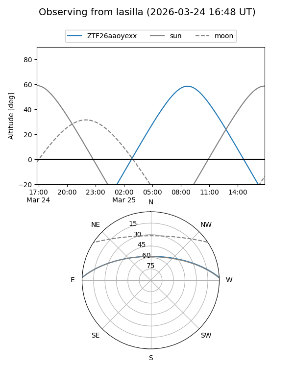
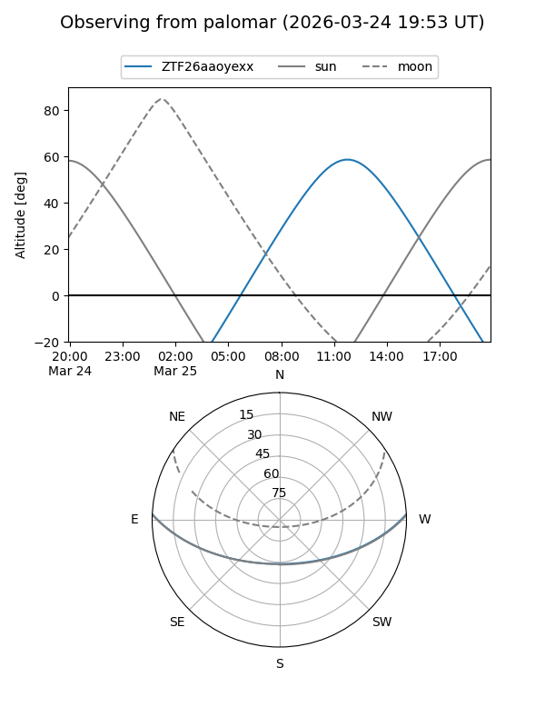

ZTF26aaoyexx
Target ZTF26aaoyexx at 2026-03-25 12:34
Aliases and brokers:
FINK: link
Lasair: link
ALeRCE: link
alt names
ZTF26aaoyexx (ztf,fink_ztf)
Coordinates:
equatorial (ra, dec) = 242.2541,+2.17310
equatorial (HMS+DMS) = 16:09:00.98,+02:10:23.17
galactic (l, b) = (13.8249,+36.59242)
Flags:
Photometry:
last ztfg=17.36, ztfr=16.71
1 ztfg, 1 ztfr detections
Lightcurve
Visibility


Additional plots